13 nouveaux ennemis a ROLE, 16 mini-boss aux comportements distincts (15 gestes differents), des compositions de vagues a synergie et des reactions d'équipe. Tout est en aplats sans contour noir, sur le rig du jeu ; les GIF sont ceux du vrai moteur (héros pilote par l'IA). Tu choisis : Valider / À refaire / commentaire.
| Point | Constat |
|---|---|
| Roster d'origine | Six corps (voyou, boxeur, kickboxeur, lutteur, karateka, archer) + ninja, plus quatre boss. Les terrains les rhabillent (nom, teinte, pièces d'équipement) : le lieu se lit, le ROLE non. Deux ennemis de lieux differents jouent pareil. |
| Roles manquants | Aucun soigneur, invocateur, charge, esquiveur, piegeur, kamikaze, porteur de drapeau ni tireur verrouille. Seuls existent : tapeur, tireur, lutteur (tank par defaut), rapide. |
| Telegraphes | Un seul langage : le départ du coup. Aucun geste annonce au sol (anneau, ligne, jauge) ; seuls les boss ont des fenêtres de punition. |
| Contres | Peu de contre evident : on tape le plus proche. Les armes ramassees servent a tout, pas a répondre a un ennemi précis. |
| Compositions | Les vagues sont des listes fixes par terrain, sans synergie (le tireur et le lutteur ne s'aident pas). Aucune reaction collective hors tir ami. |
| Mini-boss | Un reskin plus gros (PV x2,4) : mêmes gestes que l'ennemi de base. Une seule mecanique pour 16 terrains. |
| Coherence lieux | Bonne pour le décor et l'équipement (stagiaire, cadre, garde du Sénat, adepte). Le bestiaire ajoute des variantes par famille de lieu : rue, bureau, dojo, secte / jardin, robots. |
Chacun a un role distinct, une pastille de role lisible (lettre sur disque plat), un geste annonce et un contre evident. Les armes restent au sol : aucun n'a d'arme native.
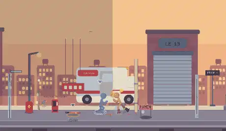
Ce qu'il fait. Frappe vite puis recule hors de portee.
Le contre. Ne le poursuis pas : garde, attends sa prochaine approche, ou lance un objet.
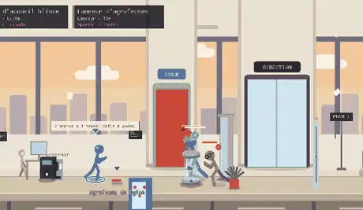
Ce qu'il fait. Leve son bouclier face a toi.
Le contre. Contourne-le en profondeur, saisis-le, ou brise sa garde (lourde).
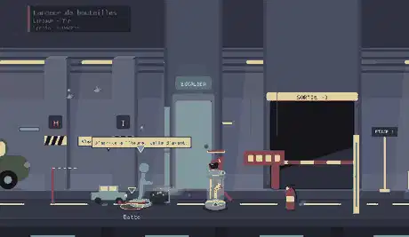
Ce qu'il fait. Lance des projectiles en cloche, de loin.
Le contre. Avance en zigzag ; il panique au contact.
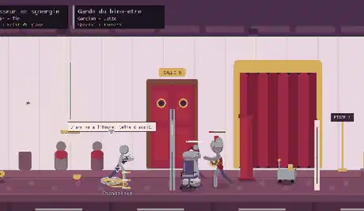
Ce qu'il fait. Soigne un camarade blesse (anneau vert).
Le contre. Interromps-le d'un coup : le soin est annule. Cible-le en premier.
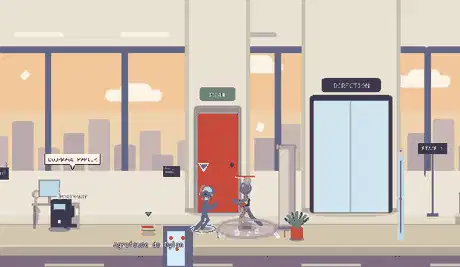
Ce qu'il fait. Leve les bras et appelle des recrues (plafonnees).
Le contre. Abats-le : ses recrues disparaissent avec lui.
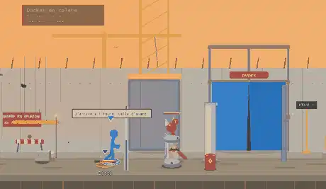
Ce qu'il fait. Racle le sol, puis charge en ligne droite.
Le contre. Pas de cote en profondeur ; s'il rate, il s'assomme : punis.
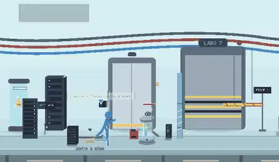
Ce qu'il fait. Esquive le premier coup qu'il voit venir.
Le contre. Feinte puis frappe sa recuperation, ou saisis-le.
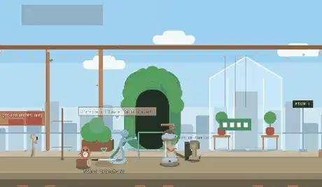
Ce qu'il fait. Pose des filets et des pointes devant lui.
Le contre. Regarde le sol ; roule ou saute par-dessus.
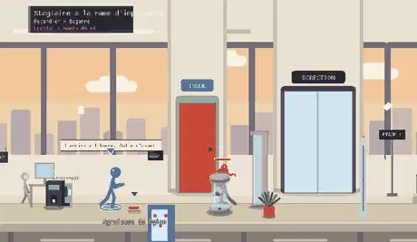
Ce qu'il fait. Fonce, la meche brule 1,2 s puis il explose.
Le contre. Tue-le de loin, ou saisis-le et jette-le dans le groupe.
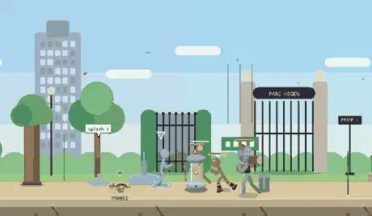
Ce qu'il fait. Son drapeau renforce les camarades proches.
Le contre. Abats-le : les bonus tombent aussitot.
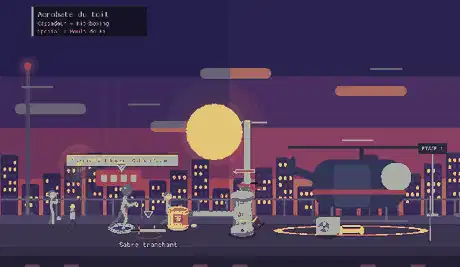
Ce qu'il fait. S'accroupit, puis bondit sur l'ombre marquee.
Le contre. Quitte l'ombre ; il retombe lourdement : punis.
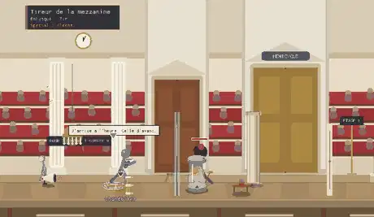
Ce qu'il fait. Vise (ligne rouge), verrouille, tire.
Le contre. Quitte la ligne après le verrouillage, ou saute.
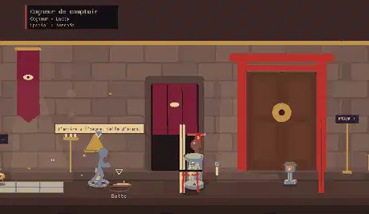
Ce qu'il fait. Cogne fort ; rugit puis s'enrage a mi-vie.
Le contre. Frappe-le pendant le rugissement ; garde-toi après.
Gardien, Infirmier, Taureau, Embusque : 16 designs en aplats (couleur, carrure, pièces). Le premier de chaque ligne est celui integre par defaut ; dis lequel garder.
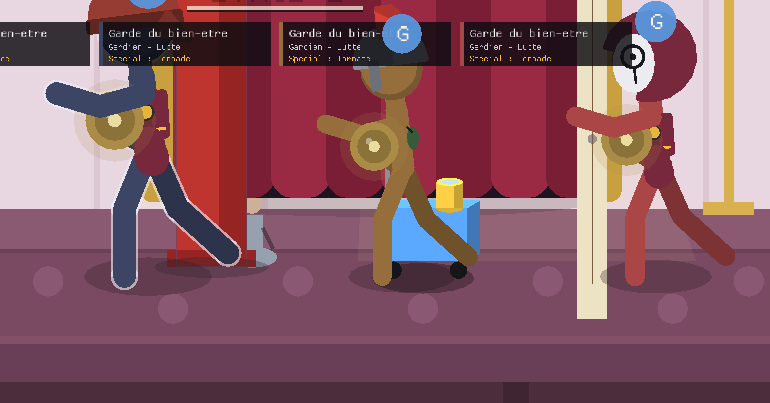
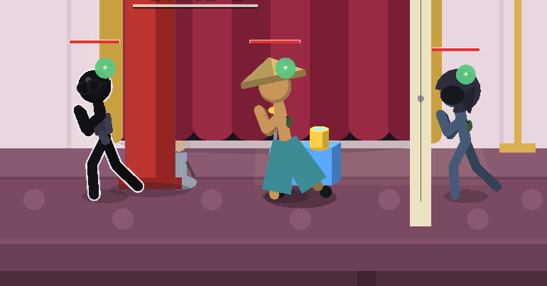
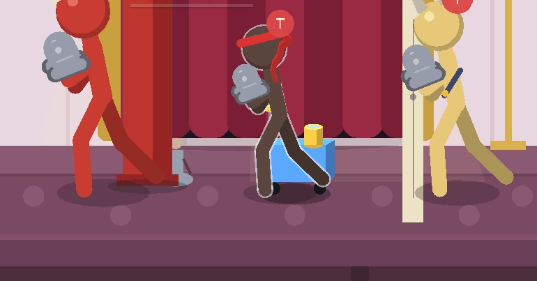
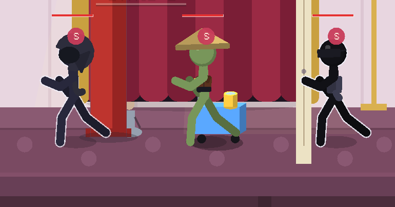
Plus des reskins : chaque mini-boss a son geste (annonce, contre). Huit sont montres, la table donne les seize.
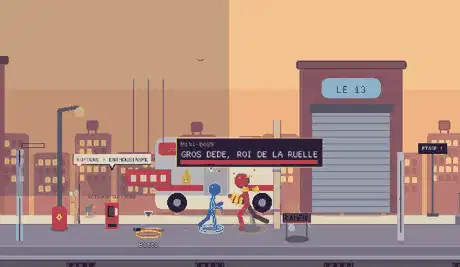
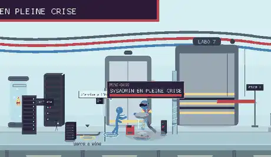
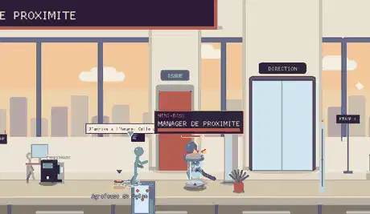
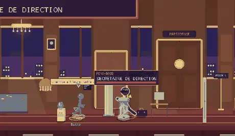
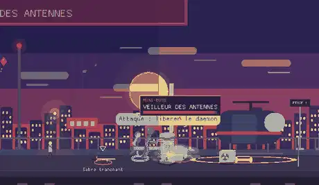
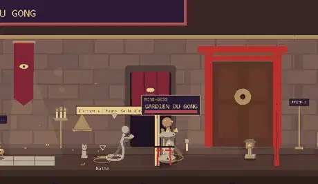
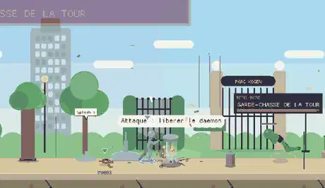
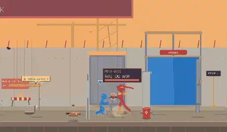
| Terrain | Mini-boss | Comportement |
|---|---|---|
| 1 | Gros Dede, roi de la ruelle | Charge en ligne droite, s'assomme s'il rate. |
| 2 | Maître de salle Onikawa | Onde qui casse les combos (après 4 coups subis). |
| 3 | Sysadmin en pleine crise | Fenêtres pop-up : appelle des recrues. |
| 4 | Gardien du niveau -3 | Garde de fer, bornee dans le temps. |
| 5 | Manager de proximite | Se teleporte dans le dos (marque annoncee). |
| 6 | Coach certifie Platine | Se regenere s'il n'est pas touche pendant 3 s. |
| 7 | Secretaire de direction | Bond ecrasant sur l'ombre marquee. |
| 8 | Veilleur des antennes | Foudres au sol : deux marques a quitter. |
| 9 | Huissier en chef | Rugit, puis s'enrage a mi-vie. |
| 10 | Gardien du gong | Onde de gong a sauter. |
| 11 | Jardinier du bien-être | Filets et pointes poses au sol. |
| 12 | Garde-chasse de la tour | Tir verrouille (ligne rouge). |
| 13 | Contremaître Barnabe | Charge en ligne droite, s'assomme s'il rate. |
| 14 | Roi du wok | Souffle de feu en cone (brûlure). |
| 15 | Chef de quai | Esquive le premier coup vu. |
| 16 | Maître queux Gaston | Soupe revigorante : se soigne. |
Remplacent les sbires les plus faibles d'étages non-boss (jamais l'étage d'entree, jamais l'étage de boss, au moins un ennemi d'origine reste). Règles d'equite : au plus un tireur verrouille, un recruteur, un infirmier ; deux petardiers ; deux ennemis penibles en tout. Paliers selon le terrain.
| Composition | Des le terrain | Roles | Pourquoi |
|---|---|---|---|
| Duo de harcelement | 2 | Harceleur + Harceleur | Deux vitesses : on apprend a garder au lieu de poursuivre. |
| Meche courte | 2 | Petardier + Harceleur | Le petardier se tue de loin ; le harceleur occupe la garde. |
| Mur et lanceur | 3 | Gardien + Lanceur | Le mur avance, le lanceur tire derrière : il faut contourner. |
| Piège a clous | 4 | Poseur + Harceleur | Le sol devient dangereux ; on se bat sans reculer. |
| Taureau et son chef | 4 | Taureau + Etendard | La charge frappe plus fort sous le drapeau : abats le chef. |
| Infirmerie | 5 | Gardien + Infirmier + Lanceur | Tank + soigneur + lanceur : l'infirmier d'abord, le mur ensuite. |
| Recrutement | 5 | Recruteur + Gardien | Le recruteur appelle ; le gardien le protège : cap sur le recruteur. |
| Mimes et tireur | 6 | Mime + Embusque | Esquive et visee : bouger en profondeur, feinter. |
| Acrobates | 6 | Cascadeur + Cogneur | Le bond et la masse : deux timings differents. |
| Cogneur et sa meute | 8 | Cogneur + Harceleur + Recruteur | La perte d'un camarade enrage le cogneur : ordre d'elimination. |
| Équipe de choc | 9 | Etendard + Gardien + Infirmier + Embusque | Les quatre appuis ensemble : lecture de priorites. |
| Escouade de bureau | 7 | Taureau + Lanceur + Infirmier | Charge, tir et soin : trois réponses differentes. |
| Reaction | Règle |
|---|---|
| Peur | Un ennemi a moins de 50 % de PV qui voit tomber un camarade recule 1,2 s (deux fois au plus). |
| Panique / fuite si seul | Le dernier sbire sous 40 % de PV fuit une fois, 2,5 s, jamais s'il est acculé dans un coin. |
| Rage | Le cogneur rugit (45 images, vulnerable) quand un camarade tombe ou a mi-vie : +30 % dégâts, +25 % vitesse. |
| Esprit d'équipe | Gardien qui couvre lanceur et infirmier, infirmier qui soigne (3 fois), drapeau +25 % dégâts, recruteur. |
| Releve | Un ennemi inoccupe tend la main a un ami a terre : il se releve plus vite (une fois par ennemi). |
| Contrat rompu | Les recrues disparaissent des que leur recruteur tombe. |
Tout passe par la simulation (aucune horloge, aucun hasard hors graine du monde), l'état de role est dans l'empreinte (hash) : deux clients voient la même chose. De 1 a 8 joueurs : les plafonds de recrues et de soins montent avec le nombre de héros vivants, les PV suivent scale_enemies. Tests en lot : toutes les compositions (solo et 4 joueurs), 13 terrains x 4 graines, 16 mini-boss, toutes sans impasse.